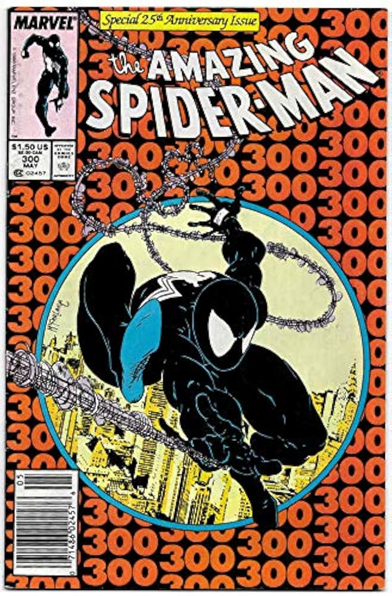
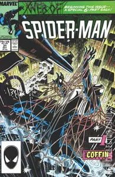
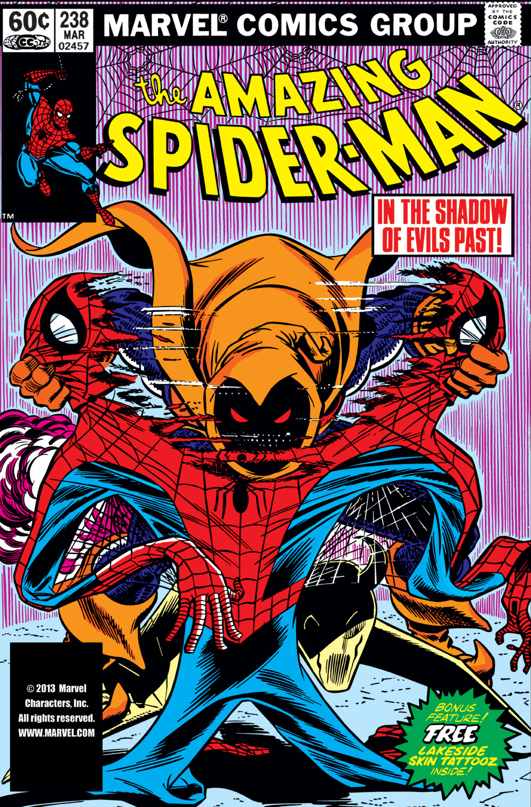
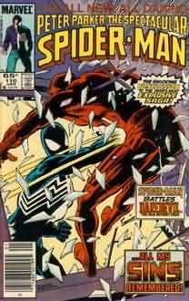
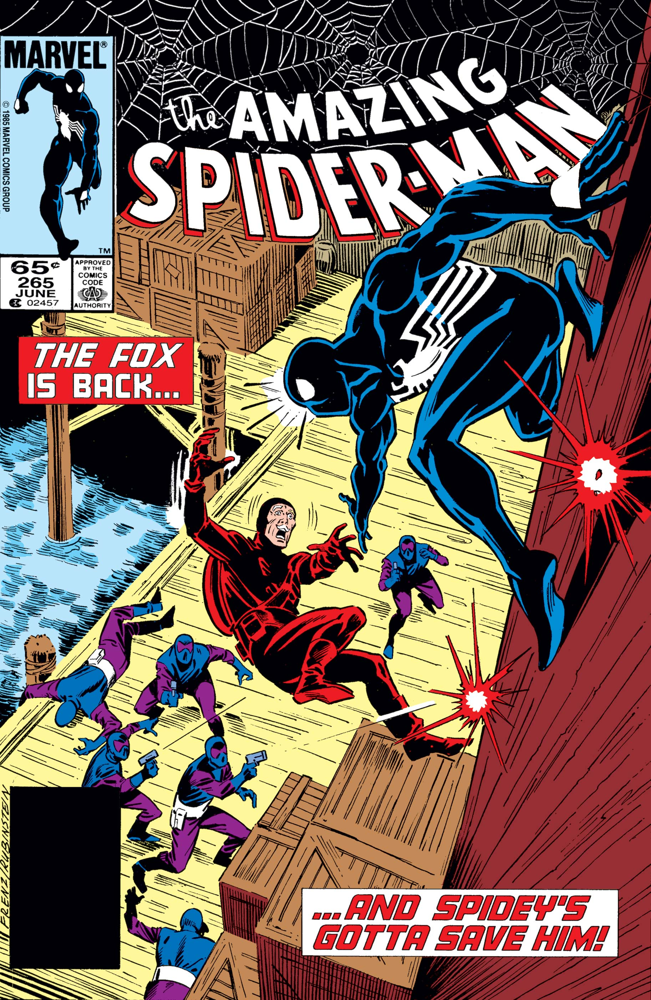
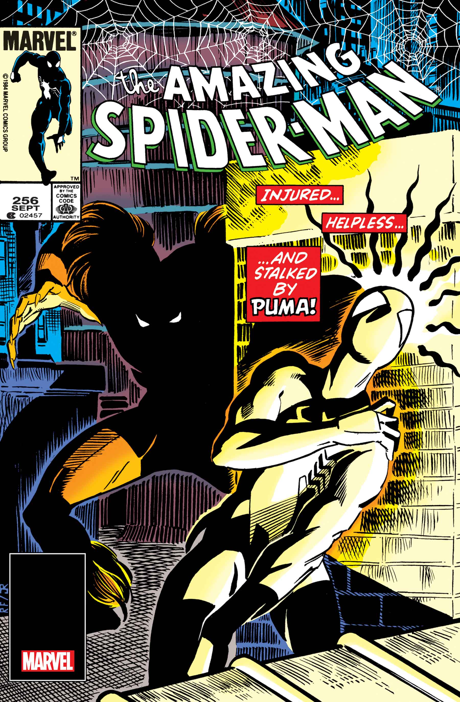
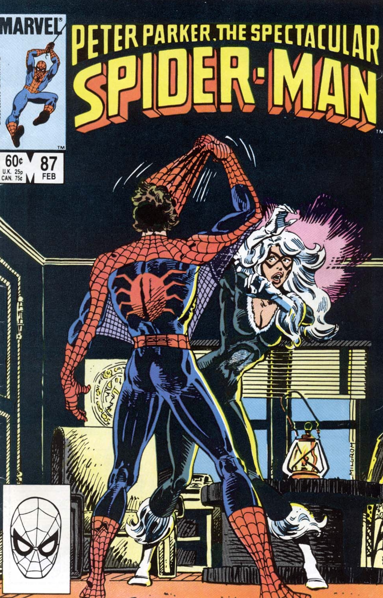

Darker stories, new villains, and the rise of the black suit – the 1980s
pushed Spider-Man into some of his most intense and iconic eras.
ToneDarker, psychological, crime-driven
New iconsVenom, Hobgoblin, Silver Sable
Major suitBlack symbiote costume
RelationshipsBlack Cat, darker strain on Peter’s life
Milestones
The 1980s reshaped Spider-Man with darker storytelling, new enemies,
and stories that still define him today. From the black suit and Venom’s
debut to Kraven’s Last Hunt, these are the issues that changed everything.
Major transformation
Secret Wars #8 (1984) – Black Suit Debut
On Battleworld, Peter discovers an alien symbiote that becomes
his new costume, kicking off one of the most important arcs in
Spider-Man history.

New villain
ASM #300 (1988) — First Venom
One of Marvel's greatest villains debuts, with Venom revealing he knows Peter’s identity
and becoming a deadly personal threat.

Definitive storyline
Kraven’s Last Hunt (1987)
A chilling storyline where Kraven defeats, buries, and impersonates Spider-Man.
A turning point in mature superhero storytelling.

New villain
ASM #238–239 (1983) — First Hobgoblin
A mysterious new Goblin emerges, becoming one of Spider-Man’s most popular villains of the
decade.

Crime drama
“The Death of Jean DeWolff” (1985)
Spider-Man investigates the murder of police captain Jean DeWolff, clashing
with Daredevil and confronting the Sin-Eater.

New antihero
ASM #265 (1985) — First Silver Sable
The mercenary Silver Sable debuts, later becoming a key ally in global missions.

New rival
ASM #256 (1984) — First Puma
Puma enters Spider-Man’s world as both a hired enemy and later an ally.

Romantic tension
Black Cat’s Rise (Early 80s)
Felicia Hardy becomes a central figure in Peter’s life, complicating both
his crime-fighting and personal identity.